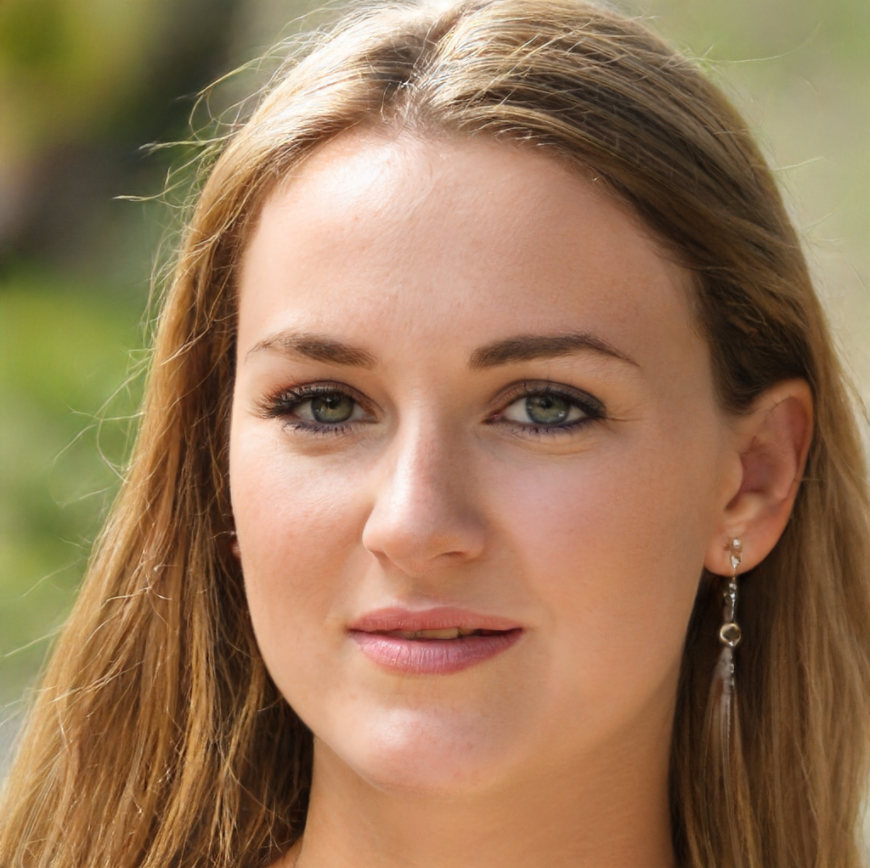

Eamon is organising the next upcoming local GAA trip. If you are interested please be sure to attend the weekly community meeting for more details.
Organisers and Events
Eamon O'Dowd
Brian Shanahan
Brian is responcible for organising our local sports teams. If you have any queries about joining any of the teams or want details about upcoming matches please attend the weekly community meeting.
Brigid Murphy
Brigid is the captain of our local kyaking team and gives tours of the river.If you would like to join the team or experience a tour please visit the boathouse for more information.
Rosheen McLennan
Rosheen is currently organising the raffle that will take place in the future. If you wish to donate any items or help on the day of the raffle Rosheens contact details are available in the community center.
Jacinta Mahoney
If you have an interest in learning about the history of the local medieval ruins or want to volunteer to help maintain the ruins Jacinta is always available during weekdays to answer any questions you may have.

Grania Kelly
Grania has been running the Knockbeg youth programme for 6 years now. This programme helps to promote children to get involved in the community and in local sports.